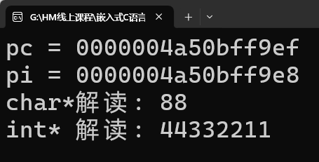
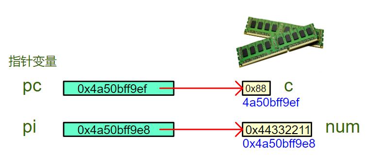
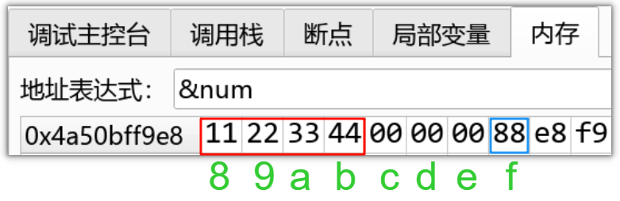
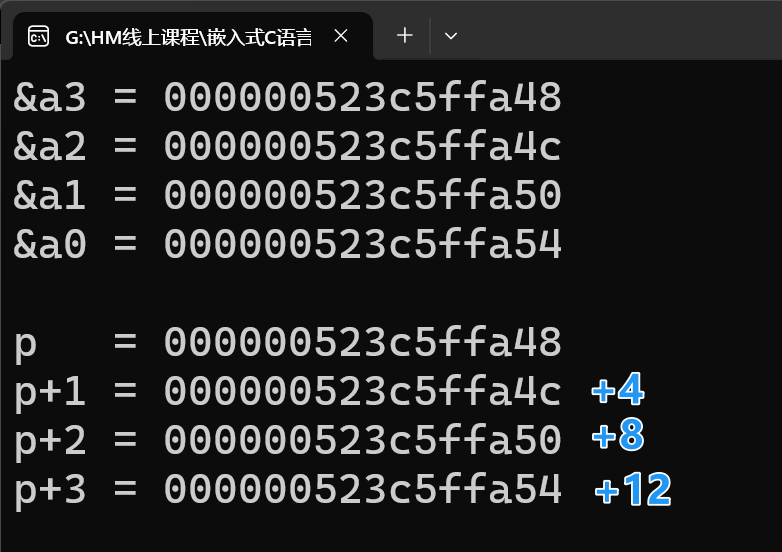
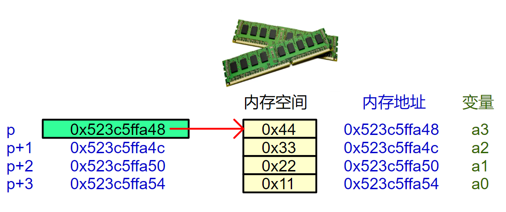
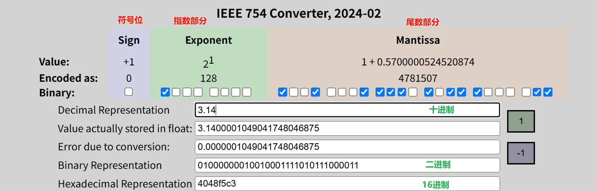
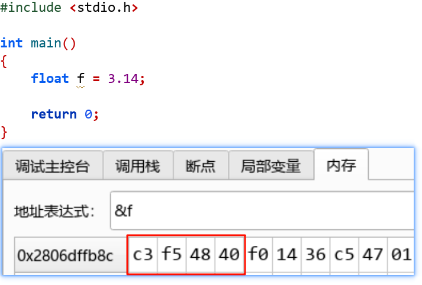
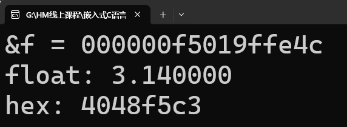
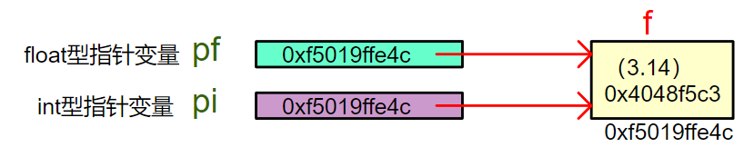

<!DOCTYPE lake>
<p data-lake-id="u1e97612c" id="u1e97612c"><span class="lake-fontsize-14" data-lake-id="u2855f593" id="u2855f593"> 指针类型的3个作用:</span></p><p data-lake-id="u825bb017" id="u825bb017"><span data-lake-id="u6b287355" id="u6b287355">1️⃣</span><span data-lake-id="u7d9a8a1b" id="u7d9a8a1b">访问宽度控制：决定解引用时访问的内存字节数；</span></p><p data-lake-id="u53b8b85c" id="u53b8b85c"><span data-lake-id="u94684664" id="u94684664">2️⃣</span><span data-lake-id="uc1a62c79" id="uc1a62c79">解读方式控制：决定如何解释二进制数据；</span></p><p data-lake-id="uda1300d1" id="uda1300d1"><span data-lake-id="u890b70c8" id="u890b70c8">3️⃣</span><span data-lake-id="ub4bf69b5" id="ub4bf69b5">运算步长控制：决定指针加减时的地址偏移量</span></p><hr/><h1 data-lake-id="Cdl4H" id="Cdl4H"><span data-lake-id="u952646cc" id="u952646cc">1&gt; 访问宽度控制</span></h1><h2 data-lake-id="h6F2P" id="h6F2P"><span data-lake-id="uc02c4bfe" id="uc02c4bfe">1.1&gt; 代码验证</span></h2><span class="yuque-card-unsupported">[codeblock]</span><h2 data-lake-id="jfxzd" id="jfxzd"><span data-lake-id="u36f215af" id="u36f215af">1.2&gt; 运行结果</span></h2><p data-lake-id="ucdc4537e" id="ucdc4537e"></p><p data-lake-id="u8eff6eaf" id="u8eff6eaf"><span data-lake-id="ua5de2c83" id="ua5de2c83">​</span><br/></p><p data-lake-id="uf15c9025" id="uf15c9025"><span data-lake-id="uff60c396" id="uff60c396">内存布局示意图：</span></p><p data-lake-id="ud7010985" id="ud7010985"></p><p data-lake-id="ufd882415" id="ufd882415"></p><p data-lake-id="ub9418e34" id="ub9418e34"><br/></p><h2 data-lake-id="MSBVZ" id="MSBVZ"><span data-lake-id="u87c5e70e" id="u87c5e70e">1.3&gt; 结论总结</span></h2><span class="yuque-card-unsupported">[codeblock]</span><hr/><h1 data-lake-id="DgQPS" id="DgQPS"><span data-lake-id="u2c433c9a" id="u2c433c9a">2&gt; 运算步长控制</span></h1><h2 data-lake-id="DWYUd" id="DWYUd"><span data-lake-id="u06c09a2c" id="u06c09a2c">2.1&gt; 代码验证</span></h2><span class="yuque-card-unsupported">[codeblock]</span><h2 data-lake-id="ikj4W" id="ikj4W"><span data-lake-id="u25245826" id="u25245826">2.2&gt; 运行结果</span></h2><p data-lake-id="u564193cb" id="u564193cb"></p><p data-lake-id="u5939104b" id="u5939104b"></p><p data-lake-id="ud8e5e2b8" id="ud8e5e2b8"><span data-lake-id="ua827f1d4" id="ua827f1d4"> </span><span data-lake-id="u2cd51af5" id="u2cd51af5">😮😮</span><span class="lake-fontsize-14" data-lake-id="ua17f25d9" id="ua17f25d9"> p+1的结果"异常" !  为什么不是+1？成了+4呢</span></p><hr/><h2 data-lake-id="FkYw5" id="FkYw5"><span class="lake-fontsize-14" data-lake-id="ucee8fa1c" id="ucee8fa1c">2.3&gt; 结论总结</span></h2><p data-lake-id="ub182d81a" id="ub182d81a"><span class="lake-fontsize-14" data-lake-id="u9cc31aad" id="u9cc31aad">为什么 p+1 不是 0x523c5ffa49，而是0x523c5ffa4c？</span></p><p data-lake-id="ua32a520e" id="ua32a520e"><span class="lake-fontsize-14" data-lake-id="u5d877c58" id="u5d877c58">→ 因为 p 是 </span><code data-lake-id="u609fcf21" id="u609fcf21"><strong><span class="lake-fontsize-14" data-lake-id="u1a9e32d4" id="u1a9e32d4" style="color: #DF2A3F">int*</span></strong></code><span class="lake-fontsize-14" data-lake-id="u6fc6c832" id="u6fc6c832">，+1 移动</span><code data-lake-id="u03622728" id="u03622728"><span class="lake-fontsize-14" data-lake-id="u14481327" id="u14481327">sizeof(int)</span></code><span class="lake-fontsize-14" data-lake-id="u07660efb" id="u07660efb">（4字节），而不是 1 字节！</span></p><hr/><h2 data-lake-id="qywUS" id="qywUS"><span data-lake-id="u3e60e534" id="u3e60e534">🐻</span><span data-lake-id="u021c5972" id="u021c5972">实践练习</span></h2><p data-lake-id="u881af652" id="u881af652"><span class="lake-fontsize-14" data-lake-id="u7d7aad60" id="u7d7aad60">代码验证 char* 和 double* 步长，并画出内存布局图；</span></p><p data-lake-id="u3c98d6f8" id="u3c98d6f8"><br/></p><hr/><h1 data-lake-id="ZRaeu" id="ZRaeu"><span data-lake-id="u2e1d067b" id="u2e1d067b">3&gt; 解读方式控制</span></h1><p data-lake-id="u9658baf9" id="u9658baf9"><span data-lake-id="ub5eeeda3" id="ub5eeeda3">功能需求：查看浮点数内存的真实二进制表示；</span></p><h2 data-lake-id="hFLqp" id="hFLqp"><span data-lake-id="u33f96cb9" id="u33f96cb9">3.1&gt; 方法1： 浮点数转16进制工具</span></h2><p data-lake-id="u2853cbc9" id="u2853cbc9"><a class="yuque-card-link" href="https://www.h-schmidt.net/FloatConverter/IEEE754.html" rel="noopener noreferrer" target="_blank">bookmarkInline：bookmarkInline</a></p><p data-lake-id="u38aed325" id="u38aed325"></p><h2 data-lake-id="jXEMN" id="jXEMN"><span data-lake-id="u2df7a440" id="u2df7a440">3.2&gt; 方法2：内存查看工具</span></h2><p data-lake-id="ua435c309" id="ua435c309"></p><hr/><h2 data-lake-id="ecyVG" id="ecyVG"><span data-lake-id="u3dcce197" id="u3dcce197">3.3&gt; 方法3：代码验证</span></h2><span class="yuque-card-unsupported">[codeblock]</span><p data-lake-id="u21388f1a" id="u21388f1a"><span data-lake-id="u753b0d8b" id="u753b0d8b">输出结果：</span></p><p data-lake-id="u6784a177" id="u6784a177"></p><p data-lake-id="u28cd7225" id="u28cd7225"><span data-lake-id="u0c692ebc" id="u0c692ebc">指针关系示意图：</span></p><p data-lake-id="u5018f285" id="u5018f285"></p><p data-lake-id="u42beb7c8" id="u42beb7c8"><span data-lake-id="uf0cb163e" id="uf0cb163e">结论</span><span data-lake-id="ue56f5b11" id="ue56f5b11">🚀</span><span data-lake-id="u91c2350f" id="u91c2350f">：同一块内存，不同的指针类型解读方式不同</span></p><p data-lake-id="u2ae3ec44" id="u2ae3ec44"><code data-lake-id="u0ac3bdba" id="u0ac3bdba"><span data-lake-id="ufb004f77" id="ufb004f77">float*</span></code><span data-lake-id="u0ccea3a7" id="u0ccea3a7">：解码为 3.14；</span></p><p data-lake-id="ud0b96d7c" id="ud0b96d7c"><code data-lake-id="uc75ac8f4" id="uc75ac8f4"><span data-lake-id="u93a24b64" id="u93a24b64">int*</span></code><span data-lake-id="u195d0336" id="u195d0336">：直接当作整数 0x4048f5c3；</span></p><p data-lake-id="uf43c0ffb" id="uf43c0ffb"><span data-lake-id="uecc01ed8" id="uecc01ed8">​</span><br/></p><p data-lake-id="u1c8f7d60" id="u1c8f7d60"><span data-lake-id="u144f341e" id="u144f341e">类似"110" 可以是：</span></p><p data-lake-id="u359ff2c2" id="u359ff2c2"><span data-lake-id="u598bc850" id="u598bc850">电话号码 → "110"（字符串视角）</span></p><p data-lake-id="u2c1ab8fa" id="u2c1ab8fa"><span data-lake-id="u16201d38" id="u16201d38">人民币 → 110 元（整数视角）</span></p><hr/><h2 data-lake-id="qOpVy" id="qOpVy"><span data-lake-id="ub7c2479c" id="ub7c2479c">🐻</span><span data-lake-id="u262c45ad" id="u262c45ad">实践练习</span></h2><p data-lake-id="u1b9bcbbd" id="u1b9bcbbd"><span data-lake-id="ub8316c3e" id="ub8316c3e">程序验证数据1.0的二进制存储，并画出指针关系示意图；</span></p>